The Missing Fleet Manual · Overnight visual production
Part VIII: visual review
15 candidates, prepared for the final manual-wide review. Fleet is the product, company, or server; host groups are lowercase fleet/fleets. Published chapter prose and artwork remain in place.
All parts · Full chapter briefs
Default: 720 px
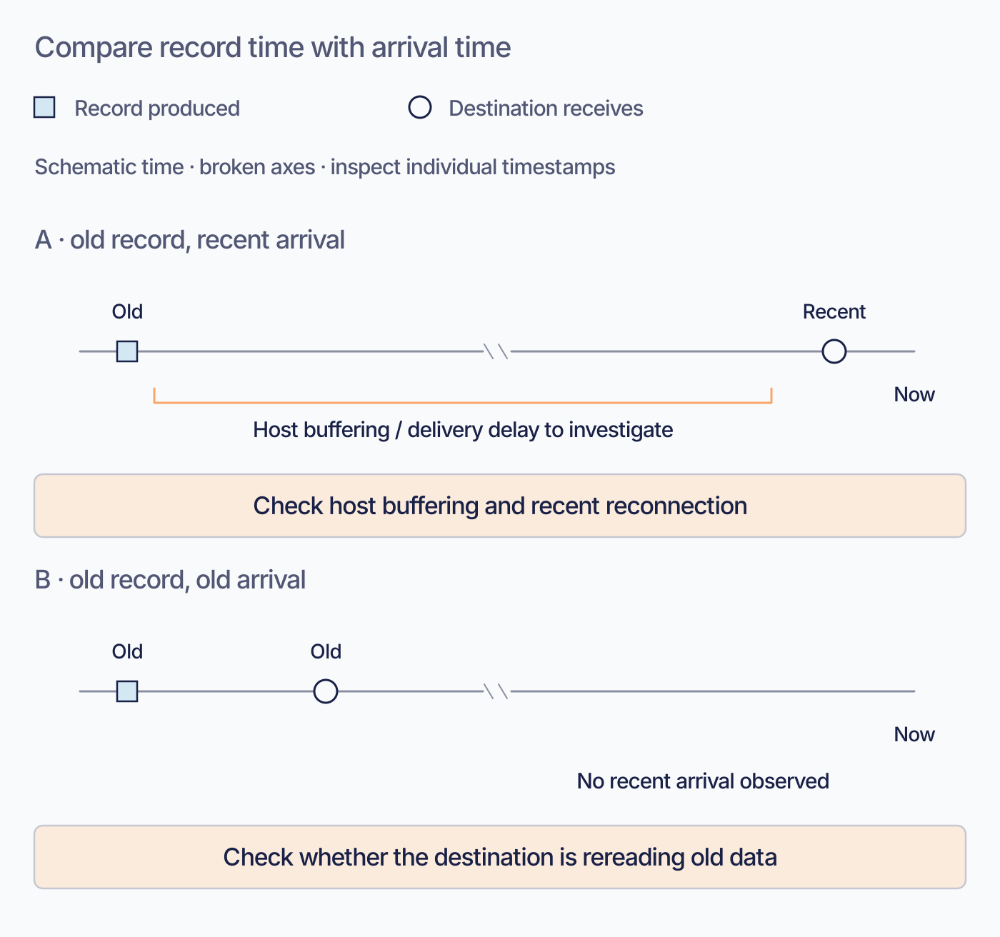
Proposed 2026-09-08; editorial brief, not technical re-verification. Replace the two-clocks prose walkthrough with the paired example. Keep retry/write behavior and the requirement to inspect raw record timestamps. Keep current prose and this TODO until the actual image is reviewed. Then check alt text against the artwork and retain an accessible summary plus all required technical qualifications.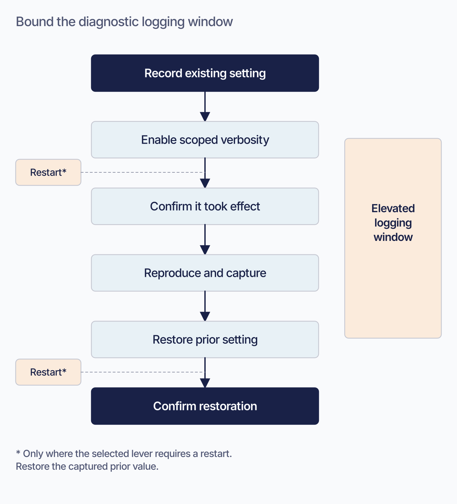
Proposed 2026-09-08; editorial brief, not technical re-verification. Use as the short operational overview above the lever-specific instructions. Preserve every exact command, platform caveat, activation delay, and cleanup step. Keep current prose and this TODO until the actual image is reviewed. Then check alt text against the artwork and retain an accessible summary plus all required technical qualifications.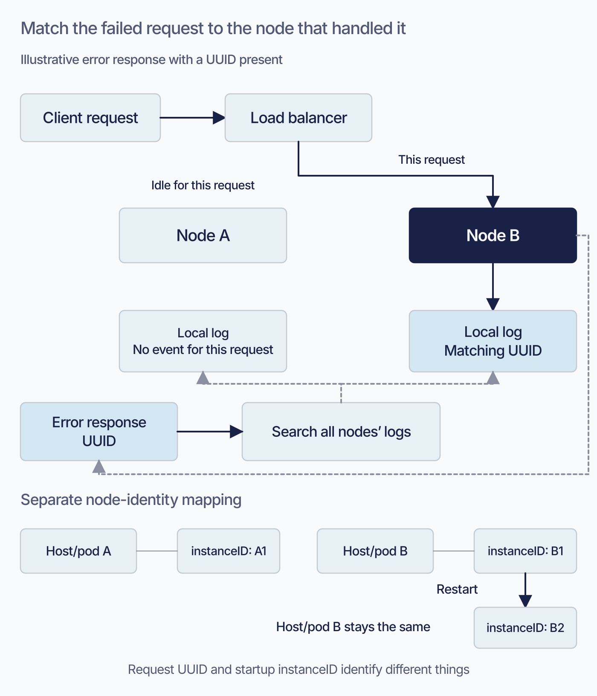
Proposed 2026-09-08; editorial brief, not technical re-verification. Condense the load-balancer trap and node-identification explanation. Preserve the exact startup line, cron_stats join, and per-node destination behavior. Keep current prose and this TODO until the actual image is reviewed. Then check alt text against the artwork and retain an accessible summary plus all required technical qualifications.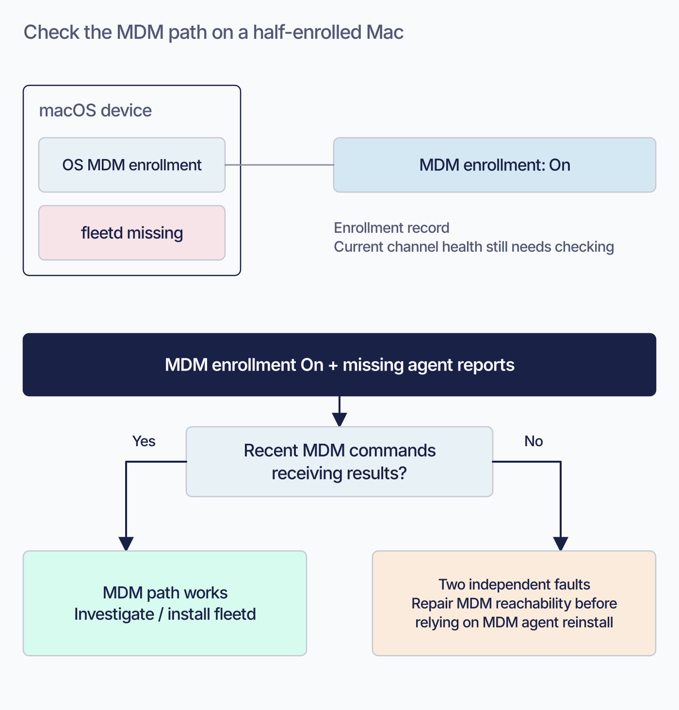
Proposed 2026-09-08; editorial brief, not technical re-verification. Replace the repeated distinction between enrollment and channel health. Keep all host commands and exact server-side timestamps/result checks. Keep current prose and this TODO until the actual image is reviewed. Then check alt text against the artwork and retain an accessible summary plus all required technical qualifications.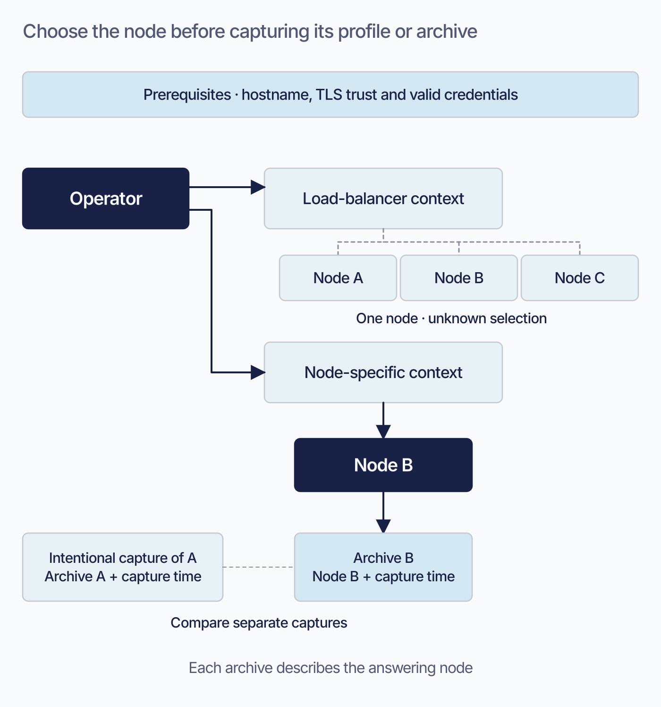
Proposed 2026-09-08; editorial brief, not technical re-verification. Replace the paragraph explaining random-node captures. Keep the exact context/login/debug commands, authentication requirements, and archive limitations. Keep current prose and this TODO until the actual image is reviewed. Then check alt text against the artwork and retain an accessible summary plus all required technical qualifications.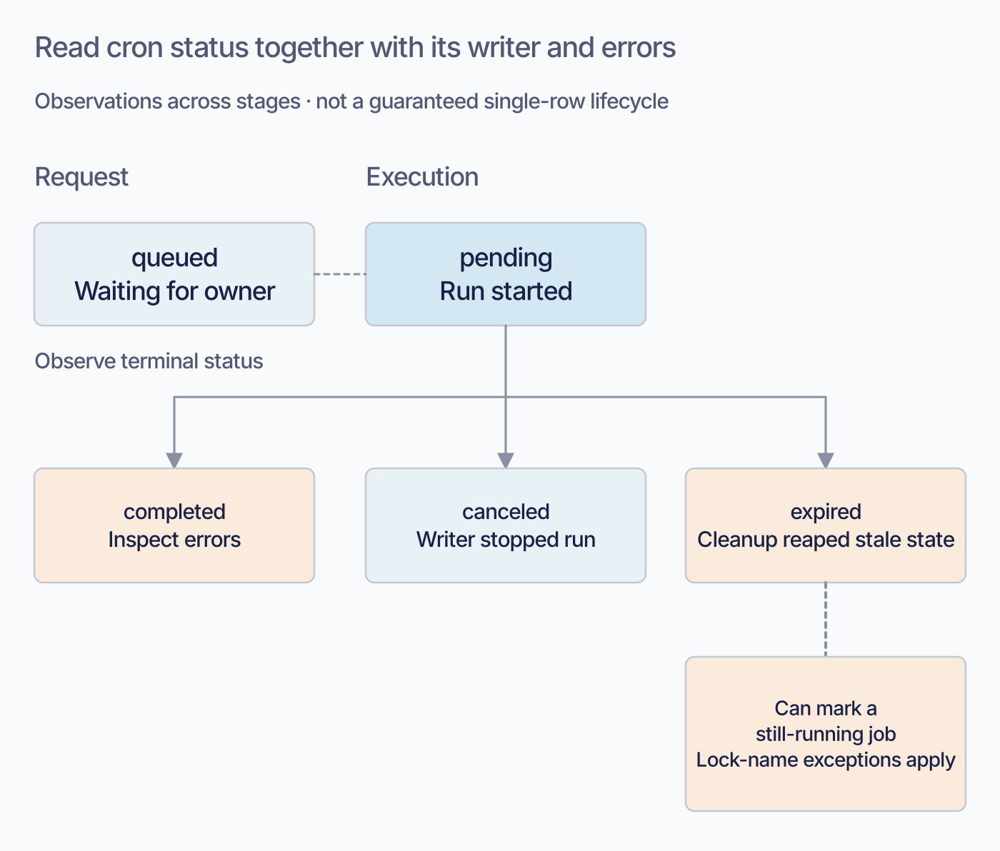
Proposed 2026-09-08; editorial brief, not technical re-verification. Reduce the status interpretation prose, while retaining the exact native status table, reaper thresholds, lock-name exception table, and trigger-verification procedure. Keep current prose and this TODO until the actual image is reviewed. Then check alt text against the artwork and retain an accessible summary plus all required technical qualifications.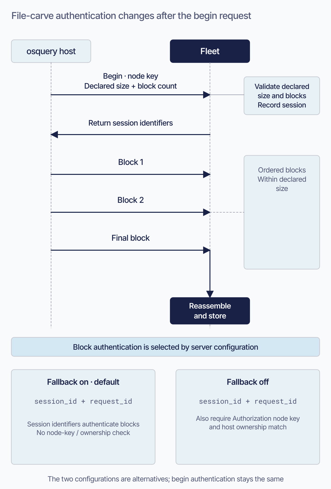
Proposed 2026-09-08; editorial brief, not technical re-verification. Replace the authentication-change explanation and basic block sequence. Keep exact size ceilings, parameter names, ordering validation, storage, and retention details as text. Keep current prose and this TODO until the actual image is reviewed. Then check alt text against the artwork and retain an accessible summary plus all required technical qualifications.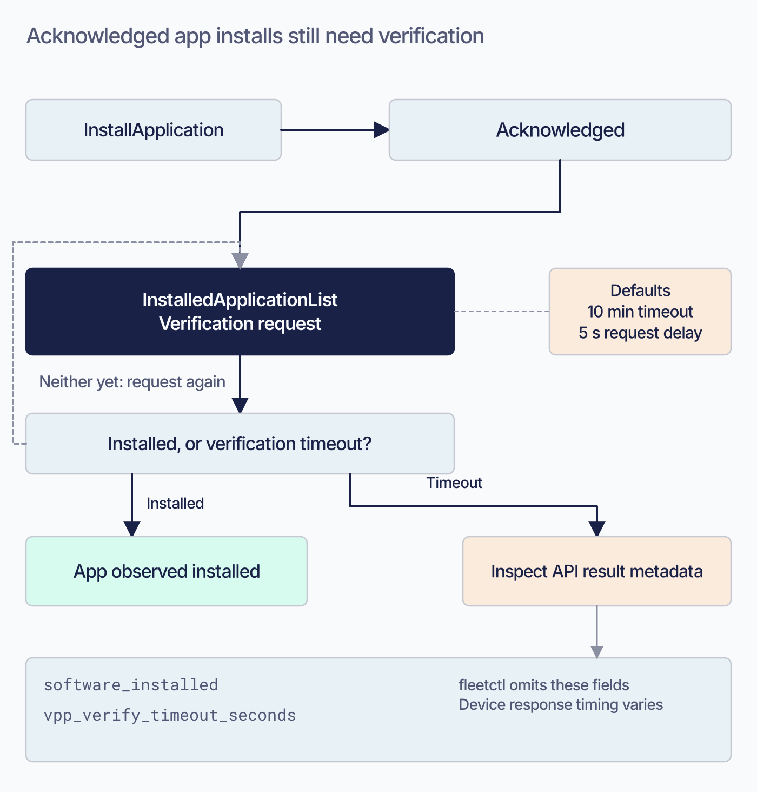
Proposed 2026-09-08; editorial brief, not technical re-verification. Condense the two-phase explanation and command-feed signature. Keep exact settings, API/CLI distinction, metadata meanings, and in-house IPA qualification. Keep current prose and this TODO until the actual image is reviewed. Then check alt text against the artwork and retain an accessible summary plus all required technical qualifications.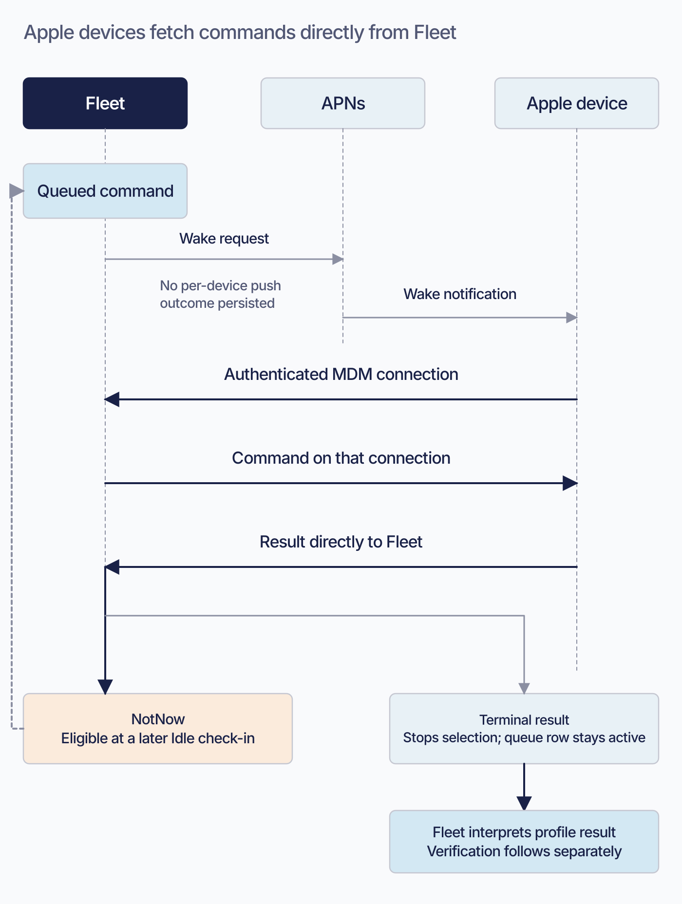
Proposed 2026-09-08; editorial brief, not technical re-verification. Priority gap from the earlier visual audit. Replace the narrative explanation of wake versus fetch with a short accessible sequence. Keep the hop/transport/state/observation table, exact paths and ports, and result-state caveats. Keep current prose and this TODO until the actual image is reviewed. Then check alt text against the artwork and retain an accessible summary plus all required technical qualifications.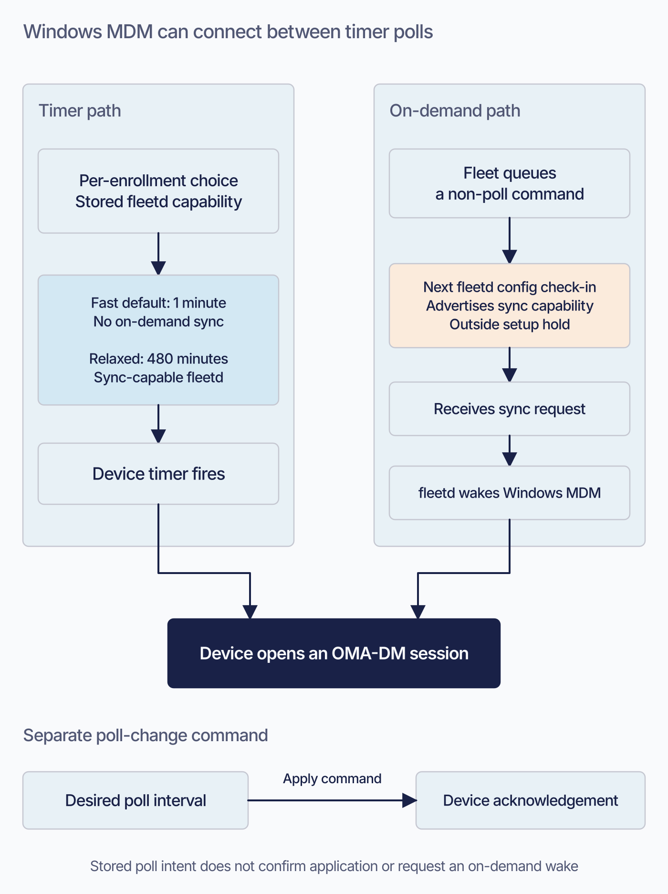
Proposed 2026-09-08; editorial brief, not technical re-verification. Replace the mechanism overview with this trigger diagram and a short sequence. Keep exact fields, capability advertisement, setup precedence, and boot/resume diagnosis. Keep current prose and this TODO until the actual image is reviewed. Then check alt text against the artwork and retain an accessible summary plus all required technical qualifications.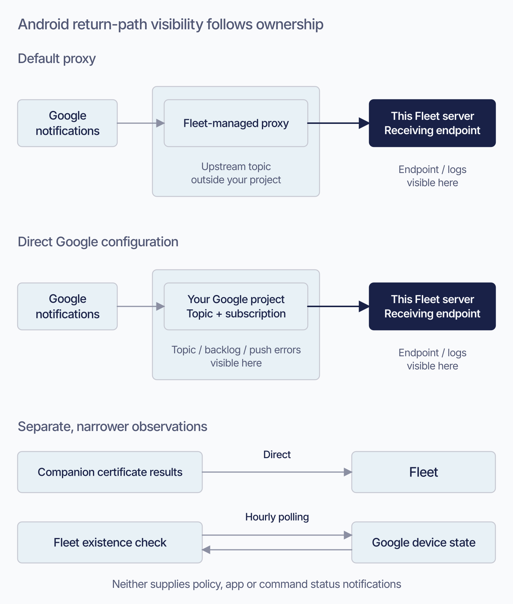
Proposed 2026-09-08; editorial brief, not technical re-verification. Reduce the proxy/direct visibility explanation. Keep endpoint authentication, message encoding, subscribed/handled types, and reconciliation exceptions. Keep current prose and this TODO until the actual image is reviewed. Then check alt text against the artwork and retain an accessible summary plus all required technical qualifications.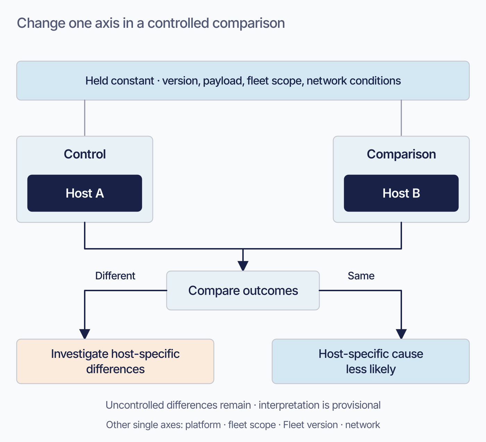
Proposed 2026-09-08; editorial brief, not technical re-verification. Replace the introductory explanation of differential isolation with the controlled example. Retain the full axis/interpretation table and cautions about what was not controlled. Keep current prose and this TODO until the actual image is reviewed. Then check alt text against the artwork and retain an accessible summary plus all required technical qualifications.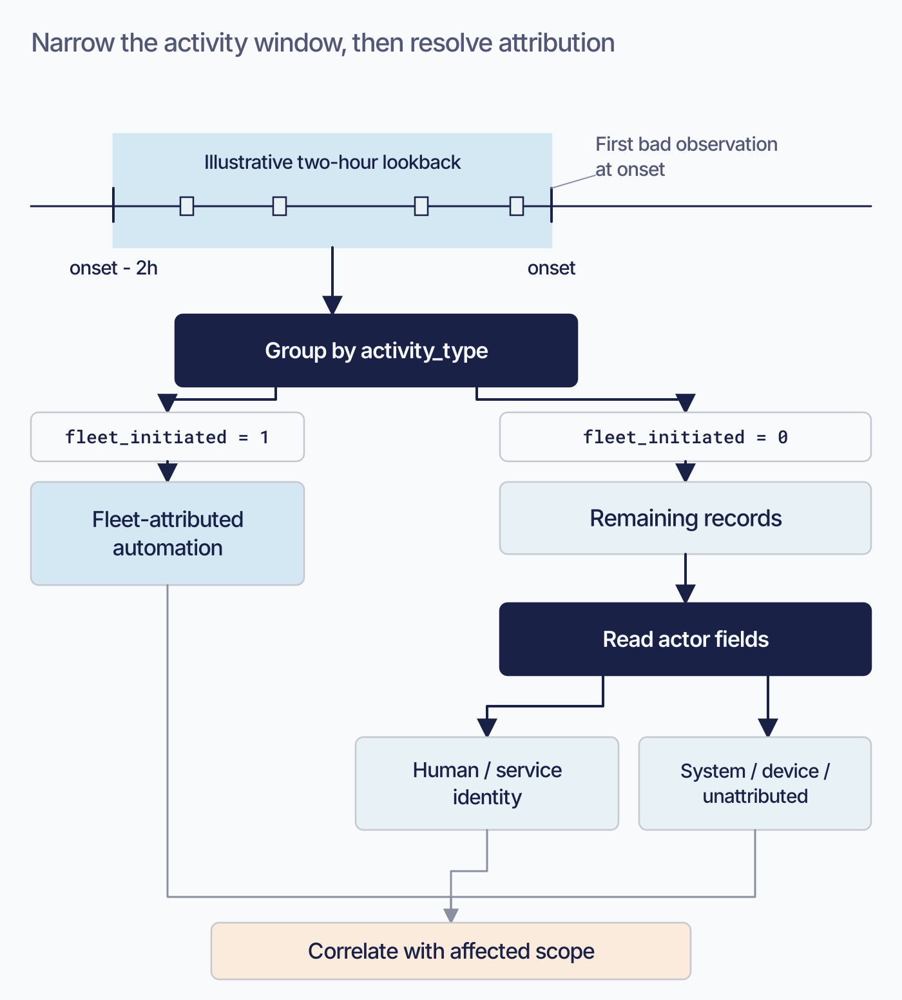
Proposed 2026-09-08; editorial brief, not technical re-verification. Replace the aggregation/attribution explanation with a concise procedure. Keep exact SQL, retention/coverage limits, and instructions to inspect non-Fleet change sources when needed. Keep current prose and this TODO until the actual image is reviewed. Then check alt text against the artwork and retain an accessible summary plus all required technical qualifications.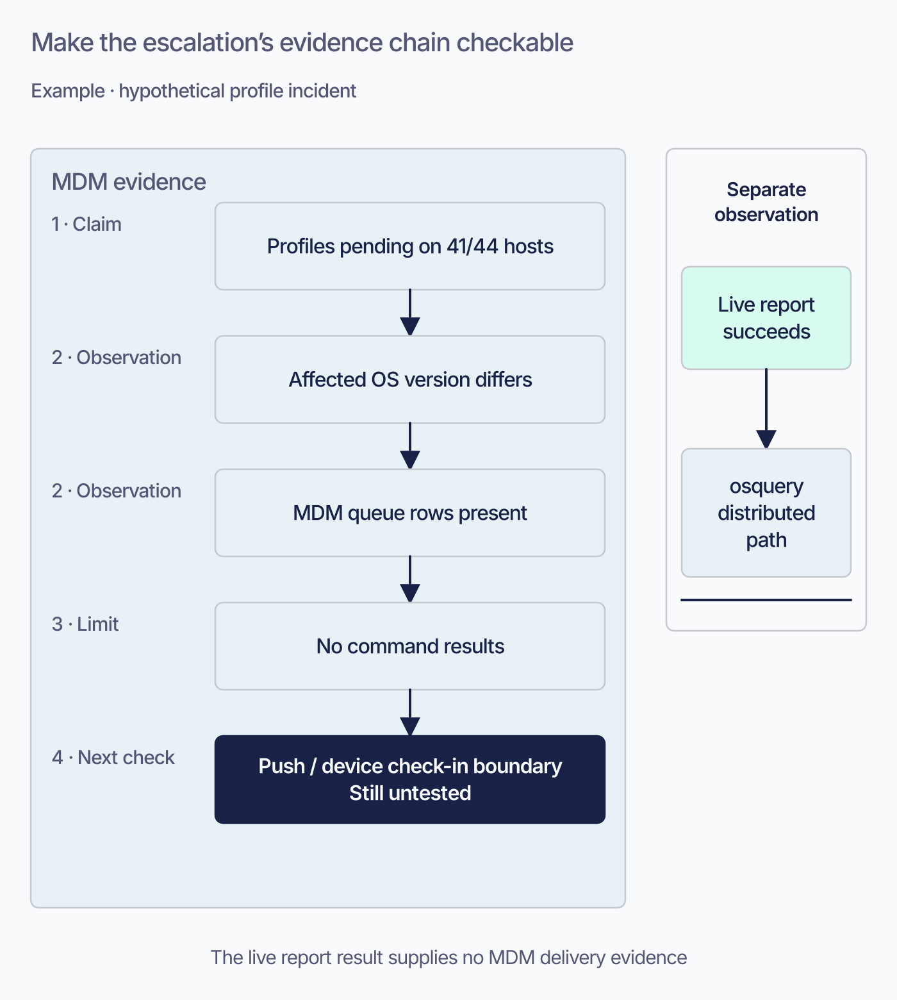
Proposed 2026-09-08; editorial brief, not technical re-verification. Shorten commentary around the useful escalation example after acceptance. Keep the complete copyable example, intake fields, artifact list, and distinctions between scheduling, pushing, and device receipt. Keep current prose and this TODO until the actual image is reviewed. Then check alt text against the artwork and retain an accessible summary plus all required technical qualifications.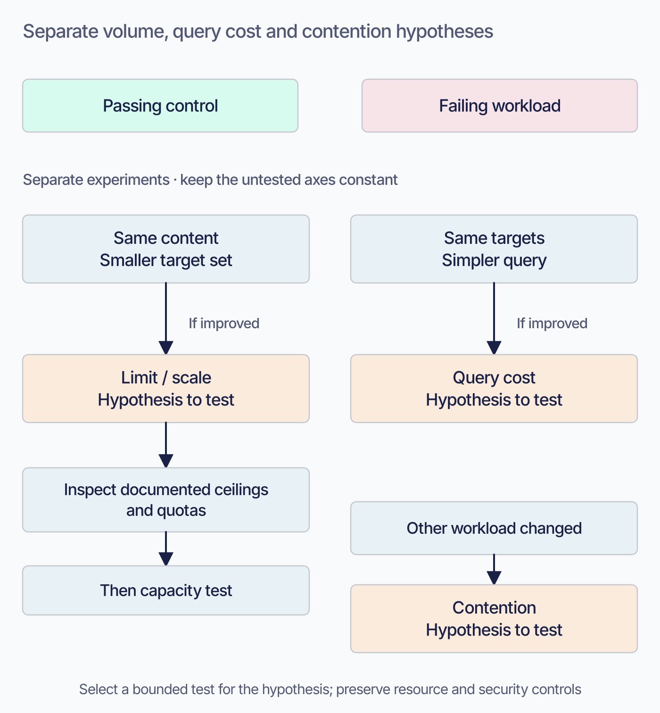
Proposed 2026-09-08; editorial brief, not technical re-verification. Replace the prose explaining imitating failure classes with this experiment map. Keep the four-cause table, actual ceilings, profiler procedure, and test-environment constraints. Keep current prose and this TODO until the actual image is reviewed. Then check alt text against the artwork and retain an accessible summary plus all required technical qualifications.